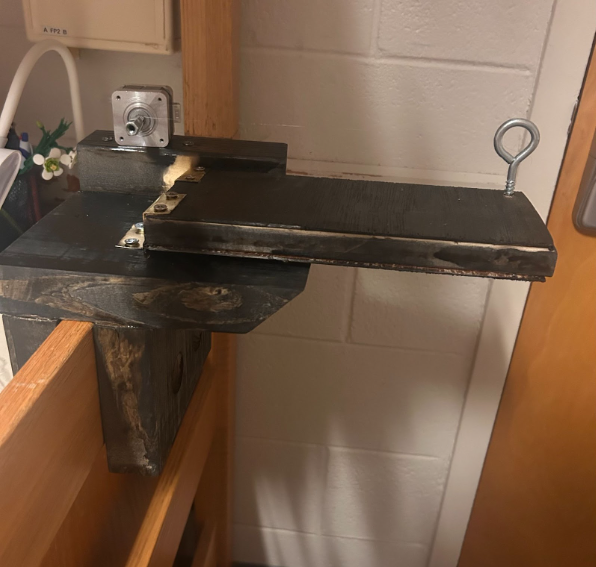
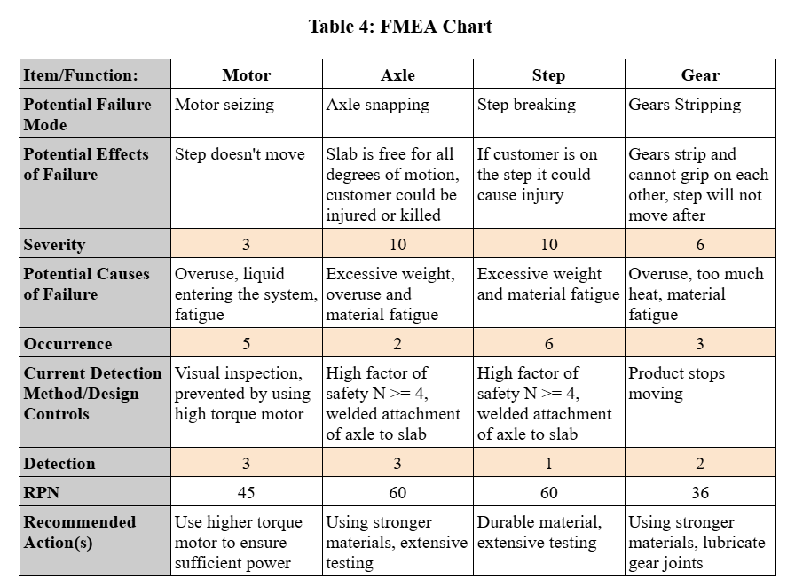
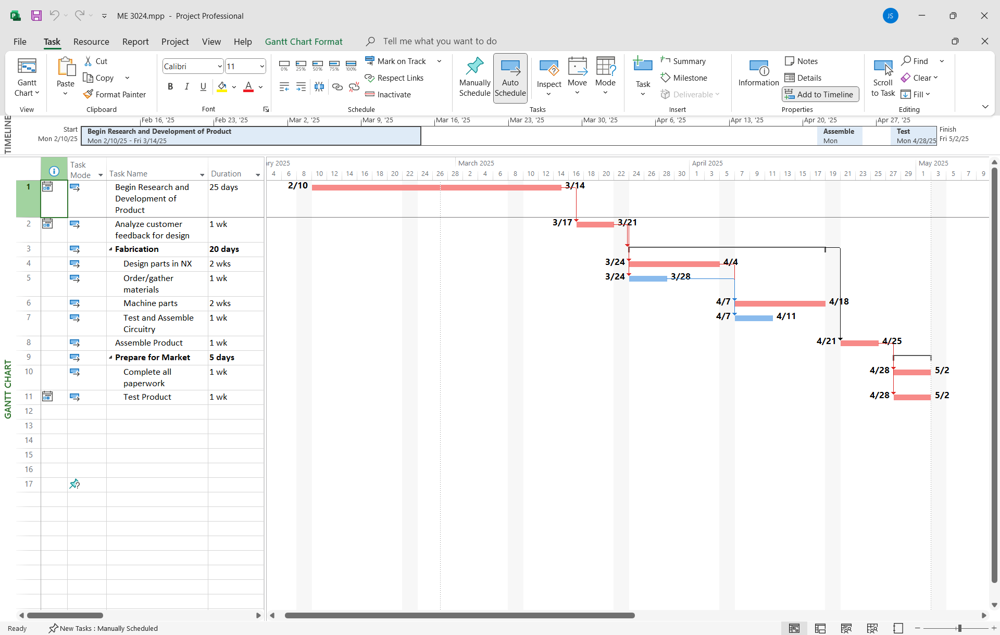

QuikStep — Automated Loft-Bed Step System

Mission
Dorm loft beds are notoriously difficult and unsafe to climb, especially when descending at night. QuikStep is a modular add-on system that slots onto any dormitory ladder rung and deploys a stable extended step at the push of a button.
The system contains multiple linked QuikStep units that deploy and retract in sequence. Two controller locations—one at the top of the loft and one at the bottom—provide instant, comfortable, safe bed access in both directions.
Design Overview
Each module consists of a structural steel or wooden body, a hinge-mounted extendable stepping surface, and an internal motorized actuation system. The design prioritizes:
- Safe and reliable deployment
- Ease of installation (no tools required)
- Low-cost manufacturability
- Modularity for different bed heights and ladder geometries
Role & Responsibilities
Mechanical Engineer — QuikStep Team
Fall 2024 – Spring 2025 (ME 3024)
- Designed, modeled, and fabricated full-scale prototypes in NX and hand-built wood/steel units.
- Led manufacturing of step assemblies, hinge mechanisms, and the first functional motorized prototype.
- Performed FEA, FMEA, force analysis, and safety evaluation for expected loads.
- Coordinated integration between mechanical system and microcontroller-based deployment logic.
- Conducted user-testing in real dorm scenarios and documented performance metrics.
System Concept
Each QuikStep module mounts around an existing ladder rung. When activated, a DC motor rotates the extended step downward, creating a full surface for the user. When retracted, the step folds flat against the ladder to maintain floor clearance.
Key Features
- Two-button control: top-of-bed + bottom-of-bed controllers
- Modular mechanical design: units slot on without permanent installation
- Failsafe retraction: spring-assist and motor override
- Scalable: supports 2–6 step modules depending on loft height
Prototypes
Initial Mechanical Prototype

The first prototype implemented a welded-steel step, wooden mounting bracket, and a hinge assembly actuated by a geared DC motor. This unit validated load capacity, hinge smoothness, and step geometry.
Engineering Analysis
FMEA

Gantt Chart — Project Timeline

Manufacturing
- Used MIG welding, wood fabrication, and metal cutting to produce prototype components
- 3D-printed motor brackets and hinge spacers
- Laser-cut templates for fitting and alignment
- Machined hinge shafts and motor couplers
Electrical & Control System
- Microcontroller-based motor control with limit-switch feedback
- Top and bottom “deploy/retract” pushbutton panels
- Wiring harness designed for easy installation and modularity
- Integrated 12V motor power with onboard regulation for control electronics
Performance & Outcome
The QuikStep prototype demonstrated reliable deployment, adequate load support, and excellent user feedback during dorm testing.
The system met course requirements for design documentation, testing, and manufacturing quality.